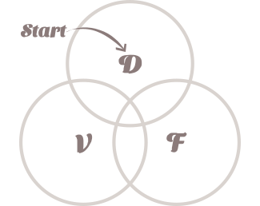

Approach
Good work starts with the right problem. That sounds obvious, but most teams are already three steps into solutions before they've questioned their assumptions.
I help teams slow down before taking the wrong path. Together we establish how people actually behave in context, pressure-test what they think they know, reframe the problem before design begins, and get clear on what the experience needs to do.
My work always starts by asking what people actually need. I use design, research, and strategy techniques to get away from assumptions and anecdotal evidence, and understand the contexts and conditions driving real human behavior.

This helps organizations understand what people will find desirable, before viability or feasibility enter the conversation. That sometimes means looking into areas that feel outside the usual scope of design through a systems-thinking lens. The environments, constraints, and decisions that shape how people behave are usually where the most compelling challenges are hiding.

My goal is to find the overlap between what customers genuinely need and what the business is positioned to provide. When we find it, what's good for the customer and what's good for the business become complementary.
In practice, this means looking up from our screens and getting out of the office. Real behavior happens in physical spaces, whether it involves digital interfaces or not. A person navigating a service isn't just tapping a screen. They are moving through environments, talking to people, working around obstacles, multitasking, and making decisions under conditions that a survey or analytics dashboard will never capture.
Whatever the project, that means observing people directly. Shadowing, immersive time in the field, or sitting down with people in their homes. What I'm paying attention to is what most research doesn't prioritize, and whatever else shows up that nobody expected:
- hesitation, abandonment, or workarounds
- differences between stated and observed intent
- breakdowns caused by environment or constraint
- misalignment between metrics and lived experience
- system-level effects of local decisions
I consider this table stakes, but apparently many people don't. I use it as a working tool, not a replacement for research or judgment. That includes designing experiences where AI plays a role, and helping teams decide where it should and shouldn't.
- as the engine behind experiences that used to be out of reach
- to sift through large volumes of research
- to check for errors in thinking
- to prototype quickly
Service Design
End-to-end work: understanding what the business needs, what reality looks like for the people being served, what systems are involved, and working with a mixed team to define and roadmap a service that actually delivers.
Design Thinking
Prototyping and co-creation with real users to identify what drives their behavior, what outcomes they need, and what a solution looks like in their actual context.
Behavioral Research
Ethnographic and observational work focused on contexts and behaviors rather than solutions. Broader than design thinking and less concerned with what gets built.
Rapid Value Realization
A way of working that starts with a hypothesis and builds quickly toward a proof of concept. Useful for testing strategic direction before committing to full execution.
UX for AI
How an AI-powered experience should present itself to people. How it should feel, how it should communicate, and equally, how it should not.
If you're working on something challenging, let's talk!
I work with teams tackling complex problems where behavior, context, and systems shape outcomes.
Currently available for consulting or full-time roles in the New York Metro Area or remotely.